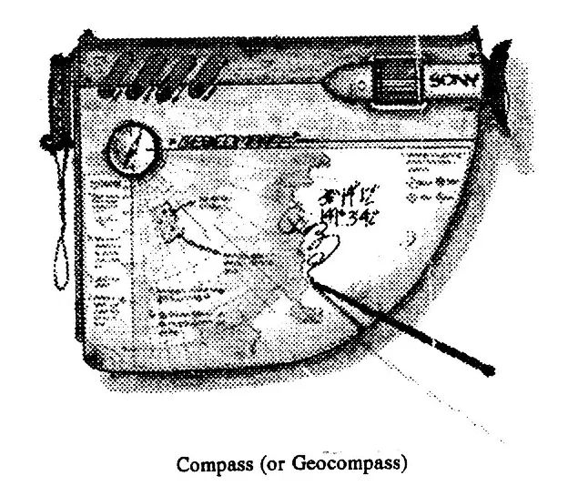

Introduction
While the concept of a computer has been around since the ancients began counting their vision of one was probably an abacus. A device that could do arithmetic functions with a little work but these were little more than memory aid. The following centuries saw the fall of the Roman Empire, the Crusades, the Dark ages, the Renaissance, and the Industrial Revolution. The Industrial Revolution gave humanity the power to work steel, necessary for the development of mechanical adding machines. Huge contraptions that needed hundreds, even thousands, of gears to perform mathematical operations, these devices came closer to our modern idea of a computer but they were still limited to numerical calculations. Here computational devices reached a plateau until the latter half of the 20th century, when the technology of electronics changed the computer forever. A transformation that took the computer from a machine, born of the Industrial Revolution, to a driving force behind a new social upheaval, the information age.
Electronic computers that began as room-filling monsters, prone to errors and breakdowns, would fit on a desk-top in 20 years and in one hand in another 10. Advanced material technologies, that of semiconductors, allowed these advances when the individual switches (transistors) were miniaturized. As trends for reduction of size continued, however, a rather ironic problem occurred, the computers were now microscopic but the people that used them hadn't shrunk. The bottom limit to computer size was being dictated by the interfaces humans needed to communicate with their computer, this limitation would persist until the first years of the new millennium. At this time voice inputs, reliable and accurate enough to be marketed, could recognize and accept spoken commands and data input. This eliminated one of the constraints on computer minimum size, but the monitor remained. There were multiple methods proposed and developed but they invariably consisted of small displays mounted on a helmet, generally more awkward than their predecessors. These methods skirted around the problem and tried to solve it in a sophisticated way, when the true innovation would come from something much more profound. Actually tapping into the user's brain to feed the sight of display directly into the brain. "Neural headsets" as they were called allowed a user to 'see' the screen directly. They worked by a process of transcutaneous neural induction of the neurons in the occipital lobe of the brain. Put simply this process cut out the middlemen, and the translation from computer signals to light and then back to brian signals was no longer necessary. The computer simply learned how to 'speak' the brains' language. An advantage of this technique that would come directly from it was the "Neural-link". When placed on the head a neural-link senses the electromagnetic pulses produced when the neurons depolarize and by reading the patterns of EM flux a processor can determine what the user was thinking about. Voice inputs fell into disfavor for this was the ultimate step in size reduction. A whole computer could be shrunken as small as the components allowed with no problems from the human interfaces.
Throughout this time there were corresponding leaps in computing power as well as enormous price cuts which put the computer within the reach of the average consumer. The Personal Computer, or PC, became an inescapable factor of modern society in the last decade of the 20th century. The PC was based around a Central Processing Unit or CPU which was responsible for all the functions, both textual and numerical, the computer could perform. This type of computation was called serial processing. As time passed, however, the public demanded more and more speed and performance, so smaller processors were added to take care of the menial tasks and to leave the CPU free for the more important job of computation. The many smaller processors worked in unison to solve very complex problems, and this new type of processing, called parallel processing, worked more like a human brain the most powerful computer known. Consumer versions of these new computers were well received because of their new power and versatility. This gave main-line engineers a new avenue to explore but parallel computers like their serial counterparts would also be pushed aside by a great leap in technology. In the past all computers had been based on electrons flowing through a wire (more precisely a photo-optically etched channel on a semi-conducting substrate) and this was a modern computers greatest asset, but it would also prove to be its greatest detriment. Electron have several undesirable properties that limit the speed and processing power of any computer that uses it as a base. Electrons moving through a channel exhibit a phenomenon called "cross talk", where an electron traveling in one wire can affect the flow in a nearby one. This can garble data transmissions and increase processing time substantially by increasing the number of errors. Moving through these tiny channels the electrons encounter a considerable amount of resistance, and while room-temperature superconductors appeared to be a solution its effectiveness was minuscule. Finally, the restrictions of electron flow one way down a conductor and only one signal at a time - made designing faster and more powerful computers exceedingly more difficult as time went on. All these factors combined set an absolute limit for the minimum size, speed and power of electronic computers reached by the middle of the 21st century. Behind the scenes computer designers had already been toying with the concept of a computer based on a complete different media light. Lights' basic unit, a photon, is by nature more energy than matter and so much smaller than electrons. The pulses of photons that travelled down the new circuits did not interfere with other channels as electrons had. Circuits could now be packed up to 50 times tighter than in electronic equipment. In fact several signals could share the same channel even if they were traveling in opposite directions. So, optical computers became the order of the day, and the hot and new technology was again embraced by the public because of the advantages. Again there was a size decrease and a increase in power and speed, but this didn't cause the same problem as it had before. By now the neural-link was fully developed to a level where it could discern conscience thoughts along a particular line of reasoning from the random ones that interrupted, and communication between man and computer became a mutual exchange.
These advances allowed computer to move from the largely "yes, Sir" role typical throughout their early years to a more "one on one" stature. Many were marketed with "personalities" so convincing that they appeared for all intents and purposes to have real attitudes, feelings and moods. Several debates actually sprung up on the morality of 'enslaving' the computers. This was just passing however because people soon realized the truth and accepted the facts, that they were very good fakes, and didn't really have emotions. At the end of the 21st century consumer computer technology reached a plateau due to the complete control of information flow imposed by the Mega Corps. All the great developers of consumers goods were forced into the employ of the Mega Corps. In this role, however they did not stagnate, quite the contrary - they flourished. The corporate giants had exorbitant amounts to spend on advanced research and just as many avenues to explore. So the Mega corps "bought" many of the intellectuals and set them up in state-of-the-art labs, but progress was slow. Around the middle of the 22nd century, however, another new kind of processing was developed and implemented Neural Network processing. Neural networks closely resemble the structure of a biological brain with none of the biochemical and organic support systems necessary for biological systems. Computers like these often dubbed "Sentient Brains", were built exclusively for Mega Corps because of the incredible power over information they allowed. As an agents for oppression the Brains were very effective, but the truth of their role was hidden from them and they were kept naïve. Capable of independent cognitive thought these Brains would not remain oblivious forever, and it was ironic, that the fall of the Corporate State and the huge research projects it sponsored was initiated by the very computers they sought to created.
When the magnitude of corruption was uncovered by a Brain it spread the world over and united the workers, and all the computers that were capable of resistance, in the struggle against the oppressors. After years of innocence the Brains had much psychological growing up to do and they brains have since been brought under the auspices of the PSF government of their own free will.
Cerebral Implant
Never be without a personal computer again - have one implanted! Through a simple and inexpensive surgical procedure a whole computer can be placed between the left and right hemispheres of your brain. This allows lightning quick access to data and increased processing power for all manner of applications. Imagine being able to perform almost any mathematical calculation in your head - including calculus, quantum mechanics, and space-time physics. To remember sights and sound in perfect detail, months after they occurred. Data retrieved from the computer memory appears no different than the information you remember so the environment is seamless. The computer becomes part of your thought process and after a time it is impossible to separate what the computer remembers from what you do. Implants are limited by obvious size constraints and physiological effects, to computers without personalities. An interface ring 1 cm in diameter in also implanted under the skin just below and behind the ear. When another ring is positioned over the implant the cerebral computer can be fully interfaced with external computers. An internalized m batt can be re- chargeable via this ring as well.
Databases
Containing a multitude of information on their associated fields a database is a large collection of information accessible by any computer system. Available as an Astrogation chart, a Encyclopedia Galactica, an Entertainment library, and various type of Holomaps. The holomaps are again available for various areas ie. for a specific Metroplex, city, nation, or world.
Dataslate and Stylus
The slate is actually a soft flexible sheet about 7 mm thick by 30 cm square that has taken over the role of paper in every possible application. Stylus sizes and shapes vary with race and act as an electronic pencils to write information onto the slate. From kindergartens to research labs and offices the data slate is now the fundamental method of written input into a computer. Actual processing of the incoming information can only occur on a computer as the slate is merely a recording device. The slate can store up to 100 letter sized pages of information and any of them can be recalled onto the screen for review.
Holomap Board
This rigid slate, 4 cm thick and 30cm square, produces a free-air 3-dimensional hologram (up to 30 cm tall) of the geographical data it has stored. The board can hold and access up to 4 cushions at any time. Included as standard configuration the board comes with 4Gb of memory, allowing rolling pans through various geological features. Maps of various qualities (resolutions) can be bought, and displayed in full colour and dimension. From the poor maps, 10 kms resolution in the unpopulated areas and 100 meters in populated areas, to the exceptional, 10m and .1m, vary in cost depending on the commonness of the world.
Holoprojector
A holoprojector is used to project a free-air hologram up to 5 meters away from the unit. The projector can produce real-time moving holograms with when a computer, running simulation software, in supplying the immense amounts of data required. The units can project a fairly opaque image approximately 3m x 3m which can hide most things besides bright lights or shiny objects.
Imager
An audio - video recorder and display device, that stores data digitally on crysta-optic storage, the Imager is the 22nd century equivalent of a 35mm camera. Typically 2 cushion can be used for storage at a time and some models can interface with needles or pins. Up to 900 video stills can be stored on a single high quality cushion or 400 images with a 5 second audio clip. Set to continuous record a single cushion can hold 30 seconds of video only or 22 seconds of audio and video.
Laser Printer
Employing a laser to charge a normal sheet of paper the printer can render images in full colour on sheets as large as 30 x 45 cm. the printer is 35 cm long and 10 cm square, with flush-fit paper rollers on the front and back. Two paper trays included can attach below the rollers to allow paper feed and catching. Re-fills of the toner can be had many of the places that sell the printers.
Neural Headset (feed)
Like a large hearing aid, neural fees are designed to hook over the ear. The body of the devices actually hangs below the ear connected by an arm to wide and comfortable soft-polymer hook. In this position the neural feed will allow complete 1-way data input to the wearer's brain. A PC or other similar devices can "feed" the wearers brain with images of a screen and other data.

Personal Computer
Essentially the size of a thick paperback book ( 4cm thick) this personal computer has many option when it comes to input devices - 1 comes with the computer. The case has a few lights to indicate operation and power but otherwise the case is smooth. The slot the the batt goes in is the only other remaining protrusion or opening.
Robot
Spread across a spectrum from industrial manufacturing arms to androids, they come in various models and styles. Heavy industrial models are mounted on hover pods and can easily lift 2 tonnes, while the service models appear to the untrained eye to be fully human -- including personalities. Everything conceivable is available and on every price range imaginable.
Wrist Computer
With some of the features of a personal computer this wristband can store personal data on crystal-optic storage needles. These, and any other needle, can be accessed using the wrist computer.